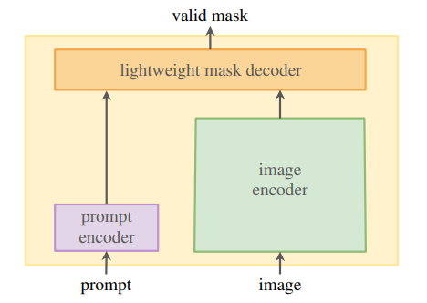
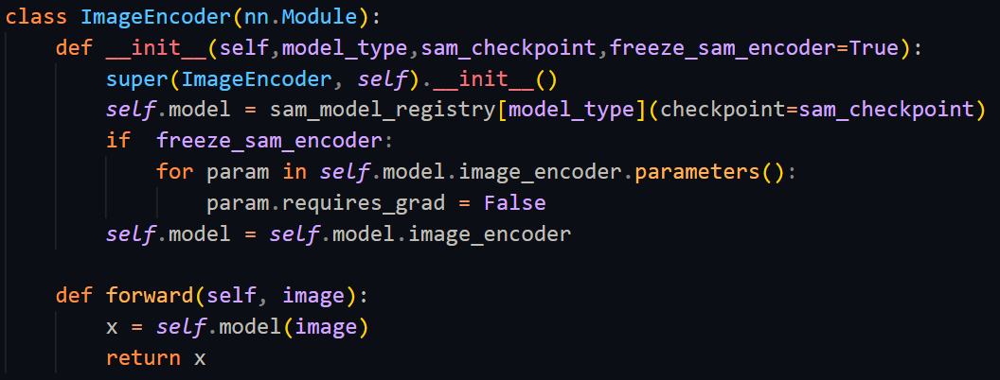
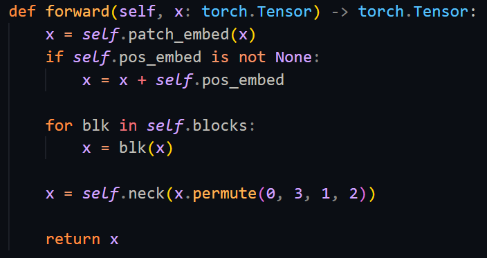
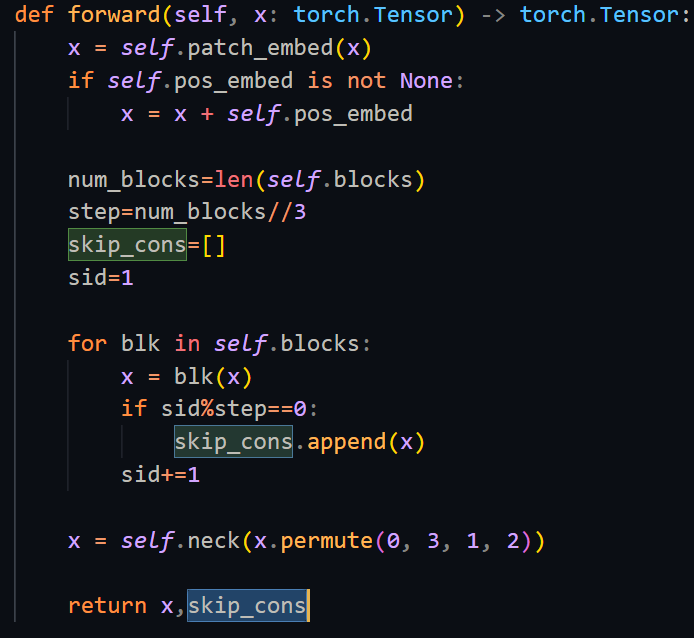
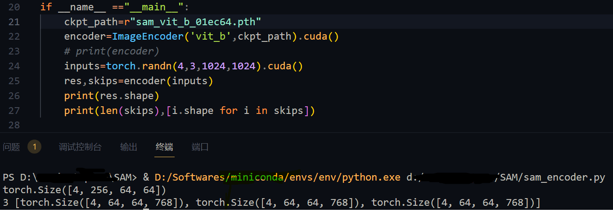
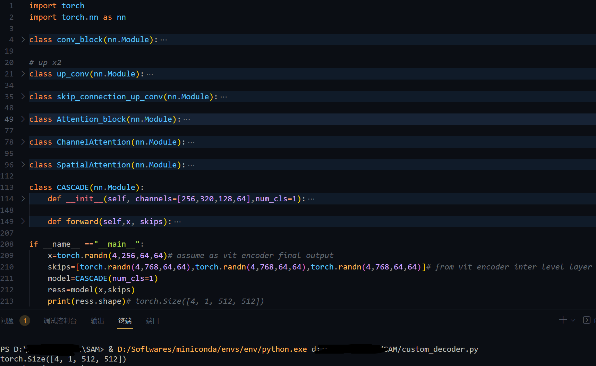
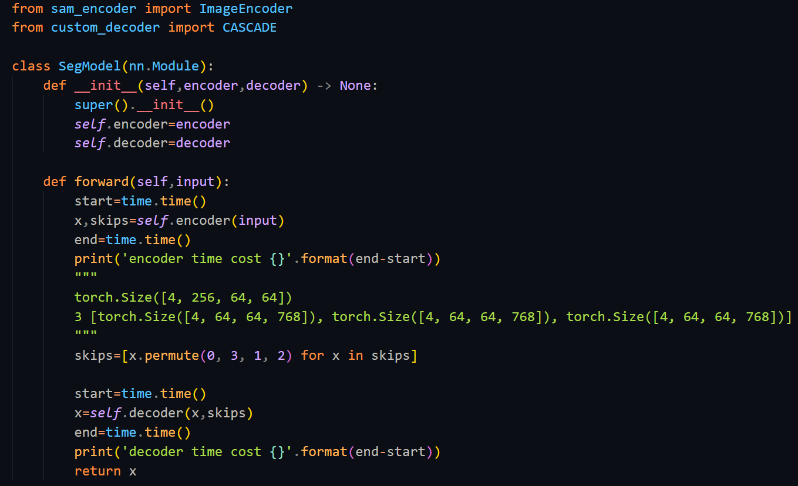
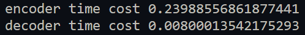

将SAM编码器迁移到自定义分割子任务中
Segment Anything Model(SAM)是META在今年发布的通用分割大模型。
鉴于ChatGPT可以将自然语言等形式的信息作为提示(prompt)输入到模型中，SAM将这一思想应用到了计算机视觉领域的语义分割任务中。
具体来说，在以前的语义分割方法中，网络的输入通常是待分割的图像，因而网络通常是一个由图像编码器和图像解码器组成的Encoder-Decoder架构，而在SAM中，多了一个提示编码器，可以将额外的提示信息也输入到网络中，同时依托强大的数据引擎生成大量数据集进行训练，使得网络能够对任一图像中可能的目标进行分割。
既然SAM是在海量数据上训练得到的，那么根据以往的迁移学习思路，我们可以将其预训练权重迁移到自己的任务中。
首先看一下SAM的网络结构：

其中：
image encoder: 一个图像编码器，用于提取输入图像的特征，SAM中使用的是ViT；prompt encoder: 一个提示编码器，用于将输入的提示信息进行编码，这里的提示有多种形式，可以是文字(text)，可以是边界框(boxes)，可以是点(points)，还可以是masks，当然也可以同时组合多种形式的prompt；lightweight mask encoder: 一个解码器，用于将prompt编码和image编码的信息进行解码，得到预测的mask。
在一般的任务中，往往都是使用一个图像编码器对图像进行编码，后接对应任务类型的解码头得到期望的预测结果，比如分类任务，那么可以将图像编码器提取的特征图进行展平到一维后接一层MLP。
因此，在迁移SAM的权重时，不需要prompt encoder，lightweight mask decoder中只有一部分权重可以迁移，image enocder权重可以全部迁移。由于lightweight mask decoder中所含参数量较少，所以接下来考虑只迁移SAM 的image enocder。
直接迁移SAM中image enocder的操作很简单，只需要按照官方示例加载SAM权重，然后取出image encoder部分即可：

其中image encoder的输入图像尺寸是1024x1024，输出特征图的尺寸是256x64x64。
接下来需要自定义一个decoder来解码这个特征图，得到预测输出。
考虑到语义分割网络中通常在Encoder和Decoder之间添加跳跃连接，以增强网络对于不同尺寸目标的识别能力，因此需要修改下segment_anything/modeling/image_encoder.py模块中的ImageEncoderViT类，将一些中间层的特征图也通过forward方法同上述256x64x64的特征图一并返回。
修改前：

修改后：

最终的image encoder测试：

可以看到，这里多输出了3个特征图，它们都是图像编码器的中间层特征图，后续将输入到解码器中。
关于解码器，我是基于论文《Medical Image Segmentation via Cascaded Attention Decoding》中所提出的CASCADE进行修改得到的，所作修改，是为了将上面得到的图像编码器中间层特征图连同最终的特征图一起输入到CASCADE中。
基于CASCADE的解码器测试如下:

其中，x和skips是假设的图像编码器的输出
需要说明的是，图像编码器的输入尺寸是1024x1024，图像解码器的输出尺寸是512x512。而在语义分割中，两者应该保持一致啊，这里主要是因为我的训练集图像尺寸就是512x512的，在数据加载阶段会将其resize到1024x1024，以匹配图像编码器的输入尺寸，最后解码直接就可以得到512x512的特征图，无需再次resize了。
现在，将图像编码器和图像解码器组合起来，就可以得到迁移SAM图像编码器权重后的语义分割网络了，将其命名为SegModel:

至此，迁移完成。
查看一下上述构建的SegModel中Encoder和Decoder运行耗时:

可以看到，大部分时间花在了Encoder中，这是因为在SAM中的ViT Encoder拥有611M的参数量，所以导致图像特征编码阶段耗时较多。
针对这一问题，后续出现的MobileSAM通过解耦蒸馏的方式使用TinyViT代替了原始SAM中的ViT，在实现与原始SAM效果近似的情况下，显著降低了Encoder的参数量，且代码结构与原始SAM完全一致，因此，只要完成了上述迁移过程，就可以很轻松的将Encoder由ViT替换成MobileSAM中的TinyViT了。